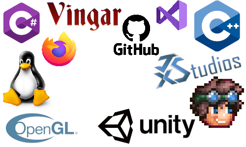
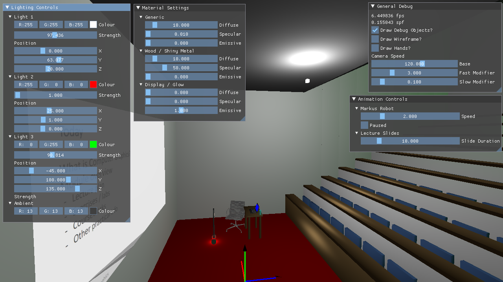

OpenGL Project
For my final year Computer Graphics university module, we had to build a 3D scene rendered in real-time using OpenGL and GLFW. It was up to us to implement pretty much everything, from matrix transformations, creation of primitives, mesh management, lighting & shaders and more. We were provided an overall framework by the module leader Markus Billeter but that was mostly about providing a consistent application structure to ease marking. Thanks very much to him for a great module, and the base used in this project! We have been asked to keep GitHub repositories private as they could be easily found by future students taking the module, but you can download a zip of the project source here.
To build on Windows, run


Building & Running
To build on linux, navigate to the root directory and run./premake5 gmake2
thenmake -j6
(ormake -j6 config=release_x64
for a release build). It can then be run with./bin/main-debug-x64-gcc.exe
(yes there is an exe extension on Linux - this was intentional by Markus).To build on Windows, run
.\premake5.exe vs2022
. This will generate Visual Studio solution and project files - you can then open the solution file and run and build from Visual Studio.Features
Initial Setup
The first task was to implement the basic matrix and vector libraries that would be used throughout the rest of the program. I implemented libraries to support 2x2, 3x3 and 4x4 matrices, and functions to multiply, invert, transpose, rotate, translate, scale and apply a perspective projection. I also implemented 2, 3 and 4 dimensional vectors. I also implemented a number of useful features to modify the provided SimpleMesh datastructure, and functions to construct meshes in the shapes of squares, cubes, cylinders and cones.First Person Camera
In order to implement a first person 3D camera, I implemented a callback event to listen for keys being pressed and mouse movement. The mouse event logic calculates the current pitch and yaw, and stores it in a struct containing the application state. Then, in the keyboard events method I calculate the sine and cosine of the yaw, and the sine of the pitch. I then add or subtract one of these three values (multiplied by a 'speed' variable) to each component of a ∆ position vector, depending on which key is pressed and hence, which direction we want to move in. The ∆ position vector tracks the change in camera position since the last main loop iteration. The aforementioned 'speed' value is modified to be greater if shift is pressed, or smaller if ctrl is pressed to allow the user to adjust the speed of the camera movement. (The controls are typical WASD, with Q & E used to move vertically up and down). Next, in the main update loop I multiply the ∆ position vector by ∆ time and add it to the current camera position vector. This means that the camera controls are frame-rate independent as the movement magnitude takes into account the frame time. The final step is to then reset the ∆ position vector to 0. I also set GLFW so that the cursor is hidden when the space bar is pressed to ensure that it doesn't confuse the user as they look around the scene. This camera position is then used to calculate the perspective projection, which also takes into account a FoV value and the aspect ratio of the window.Simple Diffuse & Ambient Lighting
I started by implemented a simple lighting model for diffuse and ambient shading in our fragment shader, with a single point light. I chose a relatively bright, even white value for the diffuse lighting, and a much darker (but still even white) ambient light. The point light was a normalised version of the vector. You can see the clear results of this lighting below.Blinn-Phong Lighting Model
The next step was to improve lighting model; I decided to implement the Blinn-Phong lighting model. I included the ability for each mesh to have it's own properties for it's diffuse, specular and emissive values. These values are then passed into the shaders and used to calculate the scene lighting according to the corrected Blinn-Phong model. My implementation at this stage was pretty standard, and did not really deviate from the classic implementation. You can see the lighting improvements to the scene below. The difference between Specular and Diffuse lighting is clear - as the camera pans you can see the light reflection changing in the largely specular desk front and tops, while the largely diffuse seats and walls between the rows have their lighting stay largely consistent. It is also possible to see in the corner the difference in an emissive object; the laptop screen, and the diffuse material around it (prior to this, it was not lit at all; now it is lit, but uses a highly emissive material property). A yellow cube represents the light position.
Texture Mapping
Next I implemented the ability for a texture to be loaded from disk, and applied to a mesh instead of a simple base colour using simple texture coordinates. I set the provided texture to appear on the face of an animated object behind the desk. You can see a picture below (in the screenshot, the face is blurred as we were asked to avoid sharing the picture where possible by Markus). The square with the texture has been set to be an emissive surface to emulate the look of a screen/display.Multiple Light Sources
In order to implement multiple light sources, I adapted the shader to contain a struct which represents each light's position, colour and strength. I then modified the uniform values to contain an array of these structs instead of the properties of one. The shader then sums the contribution of all the lights in the array, and outputs the combined value. To use these modifications, we pass in each light one by one, starting at the initial uniform index value for the array, incrementing the index as we pass in each light item. You can see the combination of three lights below - the two new ones being a green light in the back-right corner, and a small red light that moves with the animated object. You can see the combined reflections of the main white light and the green one on the tops of the desks.External OBJ File
I downloaded a model of a chair from turbosquid.com and used Blender to generate a materials file. In order to add it to the scene, I used the rapidobj library to load normals and texture coordinates, and pass in values for the Specular, Diffuse and Emissive properties (the model I had did not include these, so I could not load them from the file). You can see an example of the object below. In hindsight, this was a bad choice of object; the model has a very high number of meshes so kills the frame rate when it's loaded. There is also an issue with it hitting the disk more than once, so by default the obj file is disabled, but you can enabled it in the debug menu.Transparent Object
In order to support transparency, I modified our colour vector to use a 4 dimensional vector instead of 3. I then updated our fragment shader to also output a vec4, with the fourth channel used to represent transparency. We also told OpenGL to use transparency by callingglEnable(GL_BLEND);
andglBlendFunc(GL_SRC_ALPHA, GL_ONE_MINUS_SRC_ALPHA);
.Native Screenshots
In order to take screenshots, I made use of theglReadPixels()
andstbi_write_png()
functions. We use the first to read the current buffer into a byte array of and then pass it to the second function. I also needed to callstbi_flip_vertically_on_write(1);
- otherwise the screenshot would be upside-down. The screenshots are saved in the root directory of the project in the formatscreenshot %Y-%m-%d %H-%M-%S.png
.Multi-Texturing
For multi-texturing, I added a vec3 that allows a material to specify what texture to use for each component of Diffuse, Specular and Emissive. This is passed into the shader, which then makes use of the appropriate texture. An example of this can be seen below, which shows a single rectangular mesh where one texture is used for the diffuse portion of the surface, and another texture is used for the emissive property. The textures used can also be seen below (with an added outline) - the Microsoft logo texture is from Microsoft.com; the other texture was designed by me using logos sourced from the respective companies' websites.


Third Party UI
I made use of ImgUI for creating a debug UI. In order to ensure proper compatibility, I updated the premake files to include the third party source properly when the project is setup. I built functionality to adjust the properties of camera speed, animations, lighting and material settings, along with a number of general settings. To toggle the display of the UI, simply press 'X'. An example of adjusting the colour and position of the main light can be seen below.

Alpha Masking
In order to support alpha masking for a material, I updated the fragment shader to use vec4s for our texture outputs, and ensured that the alpha values were kept throughout the fragment shader calculations. You can see this implemented below (compare it to the Texture Mapping section to see the difference).Screen Space Textures
Next I decided to implement a screen-space texture that still makes use of scene lighting. To do this, I draw a texture on a square as normal, and transform it by the current world to camera matrix. The texture used was made by me from a photograph of my hands. You can see an example of the texture with lighting applied as the camera moves in relation to the light below.Billboarding
The last feature I implemented was pitch-yaw billboarding. I construct a 4x4 matrix which consists of the camera's pitch and yaw rotation, and apply it to the billboarded objects. I found that having the billboard work according to pitch gave an undesired effect, so disabled it by default (you can still enable it in the debug menu). An example of billboarding is visible below - the first image has pitch billboarding enabled, the other two has it disabled. The texture used was made by me and is a photo of me holding a steel sword from Terraria.